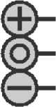
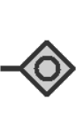

LOGIC GATES AND TOOLS IN A TERNARY ARCHITECTURE
TOOLS AND I/O
| Name | Schematic | Description |
|---|---|---|
| Wire |  |
Use these wires to connect the components together. |
| Input |  | The different inputs of the system. Right click on the item to change the value. |
| BI_Input |  |
Binary inputs. Contrary to classical inputs, they can just take the values "+" and "0". |
| Output |  | The outputs of the system. Use [ENTER] to refresh the circuits and the outputs. |
| Tags | Apply some tags to the components of your system. |
TERNARY SINGLE ENTRY GATES
| Name | Schematic | Symbol | Description | Output matrix | Alternative construction |
|---|---|---|---|---|---|
| BUF Buffer |
 |
$$A$$ | Identity : returns the same value as the input. | $$\color{#999999}{\begin{bmatrix} - & 0 & +\end{bmatrix}}$$ $$\begin{bmatrix} - & 0 & +\end{bmatrix}$$ | |
| PNOT Positive Not |
 |
$$Â$$ | Returns the opposite of the input, or + if the input is 0. | $$\color{#999999}{\begin{bmatrix} - & 0 & +\end{bmatrix}}$$ $$\begin{bmatrix} + & + & -\end{bmatrix}$$ | |
| NOT Not |
 |
$$\overline A$$ | Returns the opposite of the input. | $$\color{#999999}{\begin{bmatrix} - & 0 & +\end{bmatrix}}$$ $$\begin{bmatrix} + & 0 & -\end{bmatrix}$$ | |
| NNOT Negative Not |
 |
$$Ǎ$$ | Returns the opposite of the input, or - if the input is 0. | $$\color{#999999}{\begin{bmatrix} - & 0 & +\end{bmatrix}}$$ $$\begin{bmatrix} + & - & -\end{bmatrix}$$ | |
| ABS Absolute |
$$|A|$$ | Returns the absolute value of the input. | $$\color{#999999}{\begin{bmatrix} - & 0 & +\end{bmatrix}}$$ $$\begin{bmatrix} + & 0 & +\end{bmatrix}$$ | $$\overline {\overline{A}×A}$$ | |
| INC Increment |
 |
$$A^{+}$$ | Increments the input. | $$\color{#999999}{\begin{bmatrix} - & 0 & +\end{bmatrix}}$$ $$\begin{bmatrix} 0 & + & +\end{bmatrix}$$ | $$A⊞(+)$$ |
| DEC Decrement |
 |
$$A^{-}$$ | Decrements the input. | $$\color{#999999}{\begin{bmatrix} - & 0 & +\end{bmatrix}}$$ $$\begin{bmatrix} - & - & 0\end{bmatrix}$$ | $$A⊞(-)$$ |
| RTU Rotate up |
 |
$$A^{╯}$$ | Rotates one step up the input. | $$\color{#999999}{\begin{bmatrix} - & 0 & +\end{bmatrix}}$$ $$\begin{bmatrix} 0 & + & -\end{bmatrix}$$ | $$A⊕(+)$$ |
| RTD Rotate down |
 |
$$A^{╮}$$ | Rotates one step down the input. | $$\color{#999999}{\begin{bmatrix} - & 0 & +\end{bmatrix}}$$ $$\begin{bmatrix} + & - & 0\end{bmatrix}$$ | $$A⊕(-)$$ |
| CLU Clamp up |
 |
$$⌈A⌉$$ | Returns the positive part of the input. | $$\color{#999999}{\begin{bmatrix} - & 0 & +\end{bmatrix}}$$ $$\begin{bmatrix} 0 & 0 & +\end{bmatrix}$$ | $$A+(0)$$ |
| CLD Clamp down |
 |
$$⌊A⌋$$ | Returns the negative part of the input. | $$\color{#999999}{\begin{bmatrix} - & 0 & +\end{bmatrix}}$$ $$\begin{bmatrix} - & 0 & 0\end{bmatrix}$$ | $$A×(0)$$ |
| ISP Is Positive |
 |
$$A^{=+}$$ | Returns + if A is positive, else returns -. | $$\color{#999999}{\begin{bmatrix} - & 0 & +\end{bmatrix}}$$ $$\begin{bmatrix} - & - & +\end{bmatrix}$$ | $$\overline Ǎ$$ |
| ISZ Is Zero |
 |
$$A^{=0}$$ | Returns + if A is Zero, else returns -. | $$\color{#999999}{\begin{bmatrix} - & 0 & +\end{bmatrix}}$$ $$\begin{bmatrix} - & + & -\end{bmatrix}$$ | |
| ISN Is Negative |
 |
$$A^{=-}$$ | Returns + if A is negative, else returns -. (Same behaviour as NNOT) |
$$\color{#999999}{\begin{bmatrix} - & 0 & +\end{bmatrix}}$$ $$\begin{bmatrix} + & - & -\end{bmatrix}$$ | $$Ǎ$$ |
TERNARY DUAL ENTRY GATES
| Name | Schematic | Symbol | Description | Output matrix | Alternative construction |
|---|---|---|---|---|---|
| AND And/Minimum |
 |
$$A×B$$ | Returns the minimum of the two inputs. | $$\quad\quad\quad\color{#999999}{\begin{bmatrix} - & 0 & +\end{bmatrix}}$$ $$\color{#999999}{\begin{bmatrix} - \\ 0 \\ +\end{bmatrix}}\;\begin{bmatrix} - & - & - \\ - & 0 & 0 \\ - & 0 & +\end{bmatrix}$$ | |
| NAND Not And |
 |
$$\overline{A×B}$$ | $$\quad\quad\quad\color{#999999}{\begin{bmatrix} - & 0 & +\end{bmatrix}}$$ $$\color{#999999}{\begin{bmatrix} - \\ 0 \\ +\end{bmatrix}}\;\begin{bmatrix} + & + & + \\ + & 0 & 0 \\ + & 0 & -\end{bmatrix}$$ | ||
| OR Or/Maximum |
 |
$$A+B$$ | Returns the maximum of the two inputs. | $$\quad\quad\quad\color{#999999}{\begin{bmatrix} - & 0 & +\end{bmatrix}}$$ $$\color{#999999}{\begin{bmatrix} - \\ 0 \\ +\end{bmatrix}}\;\begin{bmatrix} - & 0 & + \\ 0 & 0 & + \\ + & + & +\end{bmatrix}$$ | |
| NOR Not Or |
 |
$$\overline{A+B}$$ | $$\quad\quad\quad\color{#999999}{\begin{bmatrix} - & 0 & +\end{bmatrix}}$$ $$\color{#999999}{\begin{bmatrix} - \\ 0 \\ +\end{bmatrix}}\;\begin{bmatrix} + & 0 & - \\ 0 & 0 & - \\ - & - & -\end{bmatrix}$$ | ||
| CONS Consensus |
 |
$$A⊠B$$ | Returns the value of the inputs if they have the same value, or 0 otherwise. | $$\quad\quad\quad\color{#999999}{\begin{bmatrix} - & 0 & +\end{bmatrix}}$$ $$\color{#999999}{\begin{bmatrix} - \\ 0 \\ +\end{bmatrix}}\;\begin{bmatrix} - & 0 & 0 \\ 0 & 0 & 0 \\ 0 & 0 & +\end{bmatrix}$$ | |
| NCONS Negative Consensus |
 |
$$\overline{A⊠B}$$ | $$\quad\quad\quad\color{#999999}{\begin{bmatrix} - & 0 & +\end{bmatrix}}$$ $$\color{#999999}{\begin{bmatrix} - \\ 0 \\ +\end{bmatrix}}\;\begin{bmatrix} + & 0 & 0 \\ 0 & 0 & 0 \\ 0 & 0 & -\end{bmatrix}$$ | ||
| ANY Any |
 |
$$A⊞B$$ | Returns the value of the non-null input, or 0 if both inputs are equals. | $$\quad\quad\quad\color{#999999}{\begin{bmatrix} - & 0 & +\end{bmatrix}}$$ $$\color{#999999}{\begin{bmatrix} - \\ 0 \\ +\end{bmatrix}}\;\begin{bmatrix} - & - & 0 \\ - & 0 & + \\ 0 & + & +\end{bmatrix}$$ | |
| NANY Negative Any |
 |
$$\overline{A⊞B}$$ | $$\quad\quad\quad\color{#999999}{\begin{bmatrix} - & 0 & +\end{bmatrix}}$$ $$\color{#999999}{\begin{bmatrix} - \\ 0 \\ +\end{bmatrix}}\;\begin{bmatrix} + & + & 0 \\ + & 0 & - \\ 0 & - & -\end{bmatrix}$$ | ||
| MUL Multiply |
 |
$$A⊗B$$ | Returns the multiplication of the inputs. | $$\quad\quad\quad\color{#999999}{\begin{bmatrix} - & 0 & +\end{bmatrix}}$$ $$\color{#999999}{\begin{bmatrix} - \\ 0 \\ +\end{bmatrix}}\;\begin{bmatrix} + & 0 & - \\ 0 & 0 & 0 \\ - & 0 & +\end{bmatrix}$$ | $$\overline{\overline{(A×B)}×A+B}$$ |
| NMUL Negative Multiply |
 |
$$\overline{A⊗B}$$ | $$\quad\quad\quad\color{#999999}{\begin{bmatrix} - & 0 & +\end{bmatrix}}$$ $$\color{#999999}{\begin{bmatrix} - \\ 0 \\ +\end{bmatrix}}\;\begin{bmatrix} - & 0 & + \\ 0 & 0 & 0 \\ + & 0 & -\end{bmatrix}$$ | $$\overline{\overline{(A+B)}+A×B}$$ | |
| SUM Sum |
 |
$$A⊕B$$ | Returns the sum of the inputs. | $$\quad\quad\quad\color{#999999}{\begin{bmatrix} - & 0 & +\end{bmatrix}}$$ $$\color{#999999}{\begin{bmatrix} - \\ 0 \\ +\end{bmatrix}}\;\begin{bmatrix} + & - & 0 \\ - & 0 & + \\ 0 & + & -\end{bmatrix}$$ | $$((A⊞B)⊞\overline{(A⊠B)})⊞\overline{(A⊠B)}$$ $$\overline{\overline{(A⊞B)⊞\overline{(A⊠B)}}⊞(A⊠B)}$$ |
| NSUM Negative Sum |
 |
$$\overline{A⊕B}$$ | $$\quad\quad\quad\color{#999999}{\begin{bmatrix} - & 0 & +\end{bmatrix}}$$ $$\color{#999999}{\begin{bmatrix} - \\ 0 \\ +\end{bmatrix}}\;\begin{bmatrix} - & 0 & + \\ 0 & 0 & 0 \\ + & 0 & -\end{bmatrix}$$ | $$\overline{(A⊞B)⊞\overline{A⊠B}}⊞(A⊠B)$$ |
BINARY GATES
| Name | Schematic | Symbol | Description | Output matrix |
|---|---|---|---|---|
| BI_AND Binary And |
 |
$$A×B$$ | $$\qquad\enspace\color{#999999}{\begin{bmatrix} 0 & +\end{bmatrix}}$$ $$\color{#999999}{\begin{bmatrix} 0 \\ +\end{bmatrix}}\;\begin{bmatrix} 0 & 0 \\ 0 & +\end{bmatrix}$$ | |
| BI_OR Binary Or |
 |
$$A+B$$ | $$\qquad\enspace\color{#999999}{\begin{bmatrix} 0 & +\end{bmatrix}}$$ $$\color{#999999}{\begin{bmatrix} 0 \\ +\end{bmatrix}}\;\begin{bmatrix} 0 & + \\ + & +\end{bmatrix}$$ | |
| BI_NAND Binary Not And |
 |
$$\overline{A×B}$$ | $$\qquad\enspace\color{#999999}{\begin{bmatrix} 0 & +\end{bmatrix}}$$ $$\color{#999999}{\begin{bmatrix} 0 \\ +\end{bmatrix}}\;\begin{bmatrix} + & + \\ + & 0\end{bmatrix}$$ | |
| BI_NOR Binary Not Or |
 |
$$\overline{A+B}$$ | $$\qquad\enspace\color{#999999}{\begin{bmatrix} 0 & +\end{bmatrix}}$$ $$\color{#999999}{\begin{bmatrix} 0 \\ +\end{bmatrix}}\;\begin{bmatrix} + & 0 \\ 0 & 0\end{bmatrix}$$ | |
| BI_XOR Binary Exclusive Or |
 |
$$A⊕B$$ | $$\qquad\enspace\color{#999999}{\begin{bmatrix} 0 & +\end{bmatrix}}$$ $$\color{#999999}{\begin{bmatrix} 0 \\ +\end{bmatrix}}\;\begin{bmatrix} 0 & + \\ + & 0\end{bmatrix}$$ | |
| BI_XNOR Binary Exclusive Not Or |
 |
$$\overline{A⊕B}$$ | $$\qquad\enspace\color{#999999}{\begin{bmatrix} 0 & +\end{bmatrix}}$$ $$\color{#999999}{\begin{bmatrix} 0 \\ +\end{bmatrix}}\;\begin{bmatrix} + & 0 \\ 0 & +\end{bmatrix}$$ | |
| BI_NOT Binary Not |
 |
$$\overline{A}$$ | $$\color{#999999}{\begin{bmatrix} + & 0\end{bmatrix}}$$ $$\begin{bmatrix} 0 & +\end{bmatrix}$$ |